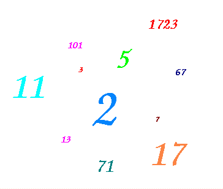

 Professor Ma.L. (Math Lover) loves everything related to prime numbers. Remember that a prime is a positive number bigger than one and only divisible by 1 and itself. He is now working on a property of a set of primes called the jumping champion. An integer N is called the "jumping champion" if it is the most frequently occurring difference between consecutive primes.
For example, consider the consecutive primes 2 3 5 7 11. The differences between primes are 1 2 2 4. Therefore, for this set of primes, the jumping champion is exactly 2 (occurring two times).
He would really like to know for any set of primes what is their
corresponding jumping champion. Could you help him?
Problem
Your task is to write a program that, given a lower and an upper bound,
calculates the jumping champion of all the primes numbers that are in the
defined limits (the upper and lower bound are considered themselves to
be inside the limit).
Input
The first line of input contains an integer T which is the number of test cases that follow.
Each test case is given on a line with two integer numbers
L and U (0 &le L &le U &le 1000000),
separated by a single space, which represent the lower and upper limits
(respectively) to consider.
Output
The output consists of T lines, one for each case.
The ith line contains:
3 2 11 2 5 30 50
The jumping champion is 2 No jumping champion The jumping champion is 4